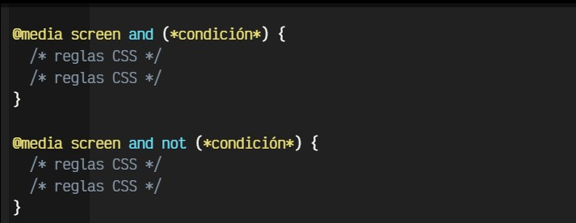

Media Queries
Son tipo de reglas de CSS, con lo que podemos hacer excepciones
para que solo apliquen a un tipo de diseño en concreto.
Estas permiten crear un bloque de código que solo se procesara en los dispositivos que cumplan
con los criterios especificados como condición.

Con este método, especificamos que queremos aplicar los estilos CSS para tipos de medios concretos (screen: sólo en pantallas, en este caso) que cumplan las condiciones especificadas entre paréntesis. De esta forma, una estrategia aconsejable es crear reglas CSS generales (como hemos hecho hasta ahora) aplicadas a todo el documento: colores, tipo de fuente, etc. y luego, las particularidades que se aplicarían sólo en el dispositivo en cuestión.
Aunque suele ser menos habitual, también se pueden indicar reglas @media negadas mediante la palabra clave not, que aplicará CSS siempre y cuando no se cumpla una determinada condición. También pueden separarse por comas varias condiciones de media queries.
Truco: Al igual que not, también existe una palabra clave only que, suele usarse a modo de hack. El comportamiento por defecto ya incluye los dispositivos que encajan con la condición, pero con la palabra clave only conseguimos que navegadores antiguos que no la entienden, no procesen la información, dejándola sólo para navegadores modernos.
| Tipo de medio | Significado | |
|---|---|---|
| Screen | Monitores o pantallas de ordenador. Es el más común. | |
| Documentos de medios impresos o pantallas de pre visualización de impresión. | ||
| Speech | Lectores de texto para invidentes (Antes aural, el cual ya está obsoleto). | |
| All | Todos los dispositivos o medios. El que se utiliza por defecto. | |
SEO
SEO significa Search Engine Optimization (Optimización para motores de búsqueda).
Se trata del conjunto de estrategias y técnicas de optimización que se hacen en una
página web para que aparezca orgánicamente en buscadores de Internet como
Google, Yahoo o Youtube. La correcta aplicación del SEO puede causar incrementos
expresivos en el tráfico y la visibilidad de las marcas en Internet.
Ventajas de Implementar Una Estrategia SEO
Aumenta la visibilidad de una marca
Atrae tráfico cualificado
Genera oportunidades de ventas
Posiciona a una marca como autoridad en el mercado
Educar el mercado
Triunfar sobre la competencia
Mejor rendimiento sobre la inversión
Tipos de Busqueda
• Búsqueda navegacional
• Búsqueda informacional
• Búsqueda transaccional
• Búsqueda Local
Saber lo que Google sabe de tu página web
Si abres una nueva pestaña en el navegador y escribes el comando “site:” y a continuación el nombre de tu dominio (algo así: “site:www.tudominio.com”), podrás ver todo lo que Google sabe de tu web. Verás el número de páginas que tiene grabadas en su índice, y lo más importante, cómo las tiene indexadas y cómo las va a ofrecer en los resultados de búsqueda en cuanto a Títulos, URLs y descripciones meta.
Optimizar las palabras clave en títulos y etiquetas
Lo primero que debemos hacer para emprender un buen posicionamiento es tener claro cuáles van a ser los términos de búsqueda por los que quieres salir en Google. Es decir, las famosas palabras clave
Una vez claras cuales son nuestras palabras clave, debemos introducirlas en el contenido, pero además debemos incluirlas en el código, para eso te recomiendo usar el plugin Yoast SEO, que te ayudará a optimizar el uso de las palabras clave, pero básicamente debes escribirlas en el Título SEO, en la URL, en las etiquetas ALT de las imágenes, en el primer párrafo, y en algún Título 2.
Evitar el contenido escaso y Duplicado
Uno de los mayores errores que puedes cometer es copiarte a ti mismo, típico error de las tiendas online que repiten las descripciones de los productos.
Se suele decir que Google permite que tengamos en una página hasta un 20% del contenido duplicado, porque hay términos que inevitablemente vamos a tener que repetir. Pero si nos pasamos, estaríamos cavando nuestra propia tumba.
Tampoco vamos a posicionar una página concreta en Google si tenemos poco contenido en esa página. Se estima que para que Google no se salte olímpicamente una página, esta debe contener al menos 300 palabras.
Enviar Sitemap a Search Console
Un sitemap o mapa del sitio web es un documento XTML que se envía a los buscadores. Este documento permite que los buscadores tengan un listado completo de las páginas que conforman una web
Podemos crearla automáticamente con un plugin, pero luego además tendremos que decirle a Google dónde se encuentra ese sitemap de nuestra web
Para eso, lo mejor es acceder a la web de Search Console, y en el apartado de Sitemaps, indicarle la URL del nuestro que nos indique el plugin que hayamos utilizado.
Optimizar el Linkjuice interno
Cada URL de tu web tendrá una nota de cara a Google con el paso del tiempo, y todos los enlaces que salgan de dicha URL transmitirán y regalarán parte de esa nota a las url de destino: a esa transmisión la llamamos el “Linkjuice”.
Por lo tanto, las páginas más enlazadas de tu web son las que recibirán más Zumo de Link y acabarán teniendo más importancia dentro de tu web y más puntos en la competición del Posicionamiento.
Optimizar la velocidad de descarga según Google
Para medir la velocidad de descarga tienes muchas webs como gtmetrix.com o tools.pingdom.com, pero si lo que pretendes es posicionar en Google, lo mejor es hacerlo con su propia herramienta, ya que es la manera más aproximada de saber qué piensa Google sobre la velocidad de tu web.
Corrige lo antes que puedas la velocidad de descarga de tu web. Los principales culpables son las imágenes, el Tema y el Hosting.
Como solución a corto plazo puedes optimizar las imágenes con un plugin como smush.it, instalar un plugin de caché como Super Cache o W3 Total Caché, y hablar con tu hosting para que te aumente los recursos.
La importancia del tiempo de permanencia
Otro de los datos más importantes es el tiempo medio que duran las visitas en tu web. No hay un valor establecido en cuanto a tiempo de permanencia mínimo recomendable, pero está claro que mientras más dure un usuario, mejor.
La importancia de la Usabilidad
Una web usable es una web Responsive, es decir, que se adapta a cualquier pantalla, pero también es una web que se descarga rápida y a través de la cual el usuario puede navegar a gran velocidad
Una web que tiene un tiempo de permanencia óptimo frente a sus competidores porque ofrece mejores contenidos y una web donde el usuario encuentra más de lo que busca y continúa navegando reduciendo la tasa de rebote.